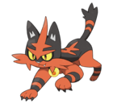

Incineroar (Japanese: ガオガエン Gaogaen) is a dual-type Fire/Dark Pokémon introduced in Generation VII. It evolves from Torracat starting at level 34. It is the final form of Litten.
Biology
Incineroar is a bipedal, feline Pokémon with a muscular build. It has a short snout with a small red nose, bright green eyes with yellow sclerae, and tiny, pointed ears. Large tufts of red fur extend from its cheeks, and much of its face is also red. The upper half of its muzzle and the top and back of its head are black. A thin red stripe runs vertically along its head to its snout, where it splits into a V-shape over its eyes. Its torso is gray with several black stripes and seems to resemble a wrestler tank-top; the front and back both have a single vertical stripe up the center, crossed by two horizontal lines. Around Incineroar's waist is a belt formed from flames that somewhat resembles a championship wrestling belt. In the front center is a small, yellow flame shape. The arms, legs, and tail are all red with black stripes forming bands around them. The arms have three stripes, spiky tufts of black fur over the shoulders, and large five-fingered hands with white claws and a single light red pad on the palm. Its legs have only two stripes and simple three-toed paws, and the tail has one stripe and a tuft of spiky black fur around the tip. Incineroar's flame belt is produced from within its body and burst from its navel and waist as its fighting spirit rises. In addition to spewing fire from its navel, it uses ferocious kicks and punches. This Pokémon disregards the safety of its opponents and on-lookers, sometimes striking the opposing Trainer with attacks. It is a violent Pokémon, and will sometimes ignore its Trainer's orders when it is not in the mood to listen. Despite this, it finds fighting unworthy opponents boring and gets motivated fighting a challenging one. Weak or injured opponents also cause it to lose the desire to fight, which others sometimes use to their advantage. It also values the attention of the crowd as Incineroar's spirit goes up while the crowd is excited or falters when the crowd is bored. While it tends to act like a heel, Incineroar is very happy internally when receiving the admiration of children or young Pokémon. Incineroar is the only known Pokémon capable of using the exclusive Z-Move Malicious Moonsault. For a brief time, the moves Darkest Lariat and Throat Chop were also its signature moves.
Facts
Origin
Incineroar is based on a tiger. It also shares elements with a professional wrestler. In addition, its category and secondary Dark type bring to mind a heel, a wrestler who embodies vice, in contrast to a face, who embodies virtue. It also has traits of domestic cats.
Name origin
Incineroar is a combination of incinerate and roar.
Gaogaen may be a combination of ガオー gao (the sound of a roar) and 火炎 kaen (flame).
Evolutive Line

|
 |

|
|---|---|---|
| Litten | Torracat | Incineroar |